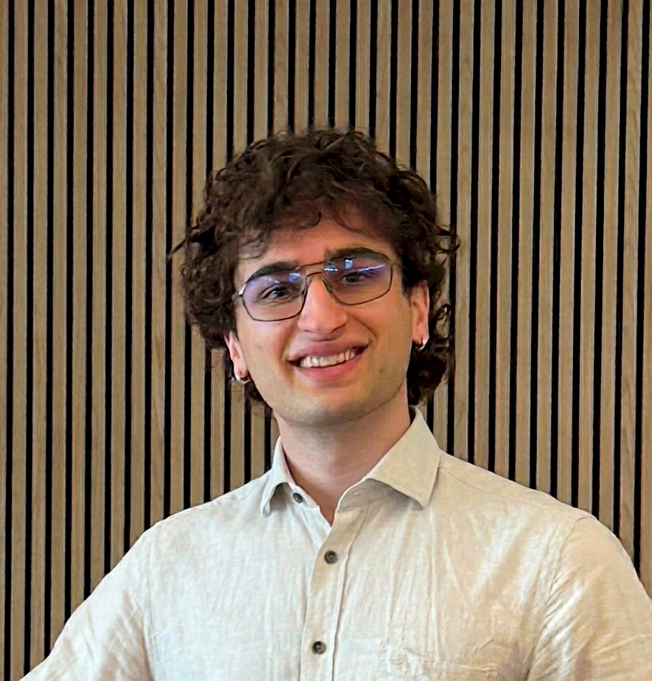

Wojciech Trejter
I build machine learning that survives contact with the real world: robotic perception, SLAM, computer vision, and sim-to-real world models.
Open to AI / robotics engineering roles in EuropeSelected work
Sim-to-real transfer for robotic arms at xBerry
I closed the gap between Isaac Lab simulation and real hardware: architecting the simulation pipelines used to train and evaluate high-fidelity arm tasks, and adapting large world models to a limited compute budget with LoRA fine-tuning. The policies didn't just score well in simulation; they worked on the robot.
Winning the European Rover Challenge 2023
I led a five-person software team to 1st place in the Remote Edition, building the rover's autonomy stack in ROS: computer-vision-driven control of a 7DoF robotic arm. Two years in student robotics taught me the part ML papers skip: systems that must run, fail, and be debugged on real hardware, under time pressure, as a team.
Published in Transactions on Machine Learning Research
Co-author of [Re] Improving Interpretation Faithfulness for Vision Transformers, reproducing prior work on SOTA vision models and improving its replicability, with computations on an HPC cluster. Earlier, I applied multitask learning to hydrodynamic imaging with ResNet-based signal processing for my BSc thesis.
Elsewhere
- Teaching Assistant, Computer Vision & Reinforcement Learning, University of Amsterdam 2025–26
- Full-stack MERN dashboard, Scrum Master rotation at IBM CIC, Groningen 2024
- Co-founder of Rodina AI, a B2B startup creating synthetic image datasets 2024
- Organiser & problem-set author, Groningen Algorithmic Programming Contest (GAPC) 2023
- Two-time ICPC competitor: 28th in Benelux, 58th in Northwestern Europe 2022–23
Education
- MSc Artificial Intelligence, University of Amsterdam (Cum Laude, GPA 8.3/10); thesis on long-term dynamics for SLAM and 3D Gaussian Splatting 2024–26
- BSc Artificial Intelligence, University of Groningen (Cum Laude, GPA 8.8/10, Honours programme) 2021–24
What I work with
My core is Python and PyTorch; I train and fine-tune transformers and world models (BERT, LLMs, diffusion), and work across the robotics stack: ROS, OpenCV, SLAM, Isaac Lab, 3D Gaussian Splatting. On the infrastructure side: Docker, FastAPI, SLURM, WandB, GitLab CI/CD.